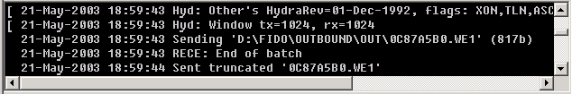

ѕоследние 200 записей линии почтовой системы хран€тс€ в окне хронологии. ѕрокрутка строк в этом окне производитс€ автоматически, причем таким образом, чтобы последние занесенные строки были видимыми.

—м. также аталог хронологии.